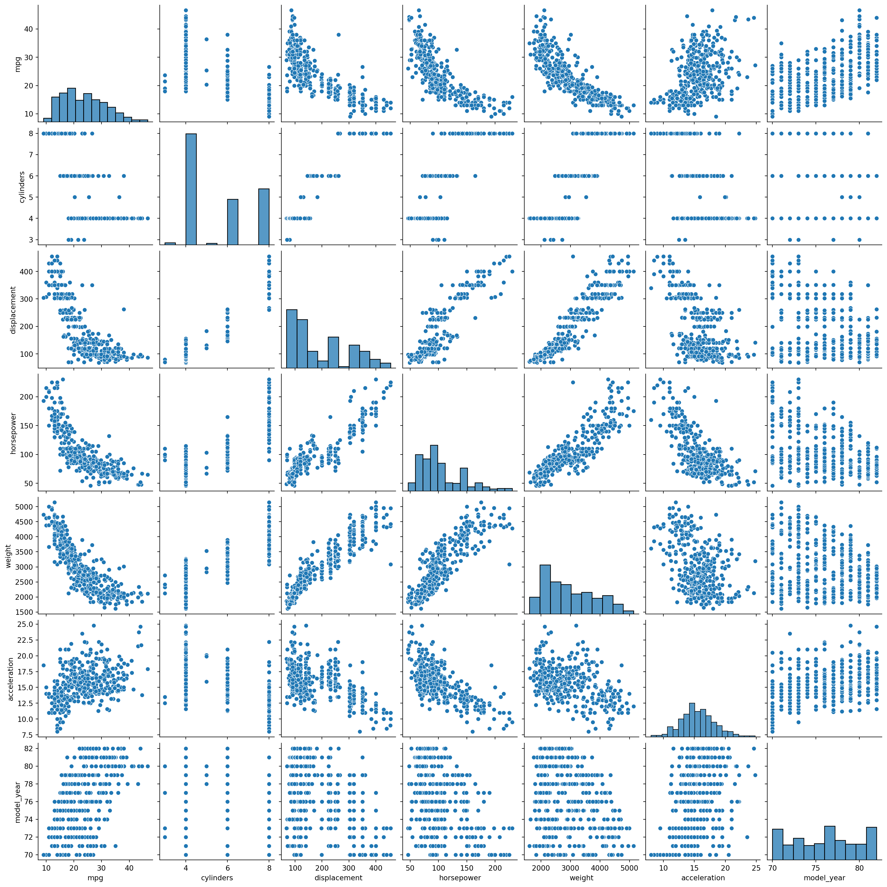

Dekking et al., Chapter 15: Exploratory data analysis: graphical summaries
Dekking et al., Chapter 16: Exploratory data analysis: numerical summaries
4.1.2 Python
4.1.2.1 Using seaborn for graphical summaries
4.1.2.1.1 The pairplot
We have covered how to use the sns.histplot already, with the key point being that you have to use stat="density" to make it plot a density instead of just counts. There are several plotting methods in seaborn that are useful, but for exploratory data analysis the sns.pairplot is especially important.
To illustrate the sns.pairplot function, we will first load some data. The seaborn package comes equipped with several nice data sets, which we will use for illustrations.
Here we have a list of available data sets. Let’s load the mpg data set, which contains information about the miles per gallon (mpg) for various car makes, along with other information.
mpg = sns.load_dataset("mpg")mpg.head()
mpg
cylinders
displacement
horsepower
weight
acceleration
model_year
origin
name
0
18.0
8
307.0
130.0
3504
12.0
70
usa
chevrolet chevelle malibu
1
15.0
8
350.0
165.0
3693
11.5
70
usa
buick skylark 320
2
18.0
8
318.0
150.0
3436
11.0
70
usa
plymouth satellite
3
16.0
8
304.0
150.0
3433
12.0
70
usa
amc rebel sst
4
17.0
8
302.0
140.0
3449
10.5
70
usa
ford torino
We can investigate the data types of this data frame,
The last two columns are of data type object, which is a placeholder for non-numeric types. float64 are decimal numbers and int64 are integers.
Using sns.pairplot we get a convenient graphical representation of the numeric types.
import matplotlib.pyplot as pltsns.pairplot(mpg)plt.show()

Observe that the diagonal contains the histograms of each column and the off-diagonal elements the scatter plot of each combination of columns. From this plot we can immediately read that, e.g., the model year is approximately uniformly distributed and that the mpg is positively associated with the model year. (You might need to use the scroll bar to see this.) This shouldn’t be surprising, given continual developments in car technology.
Observe that you can use the kernel density estimator here as well, on the diagonal, by specifying diag_kind="kde". Kernel density estimators should generally be prefered when interacting with people with some statistical background, as they usually give a better indication of the population density than a histogram.
There are several other options in pairplot; feel free to play around with them to find the best-looking plot! If you work as a data analyst, preparing nice-looking and informative plots is one of the most important parts of the job, but we won’t test you on your graphical design skills in this course.
4.1.2.1.2 Count plots
Recall the difference between discrete and continuous random variables. Continuous random variables are defined for decimal numbers and have a probability density function (PDF). That is, \(f(x)\) is a probability density of a random variable if and and only if \(f(x)\geq 0\) and its integral is \(\int f(x) dx = 1\). Continuous random variables can be modeled with histograms and kernel density estimators, and the result is a density in itself.
On the other hand, discrete random variables (defined on a set of integers or categorical values) have a probability mass function (PMF), a function \(p(x)\geq0\) that sums to \(1\), i.e., \(\sum p(x) = 1\). These should ideally not be modeled using histograms, but with count plots (bar plots). For instance, the model_year column of the mpg data set have data type int64, a discrete data type. The result is a is almost a probability mass function, provided it is normalized by \(n\). (The countplot function has, sadly, no option of returning a probability mass function instead of just counts.)
A convenient way to quickly obtain numerical summaries is the .describe method.
mpg.describe()
mpg
cylinders
displacement
horsepower
weight
acceleration
model_year
count
398.000000
398.000000
398.000000
392.000000
398.000000
398.000000
398.000000
mean
23.514573
5.454774
193.425879
104.469388
2970.424623
15.568090
76.010050
std
7.815984
1.701004
104.269838
38.491160
846.841774
2.757689
3.697627
min
9.000000
3.000000
68.000000
46.000000
1613.000000
8.000000
70.000000
25%
17.500000
4.000000
104.250000
75.000000
2223.750000
13.825000
73.000000
50%
23.000000
4.000000
148.500000
93.500000
2803.500000
15.500000
76.000000
75%
29.000000
8.000000
262.000000
126.000000
3608.000000
17.175000
79.000000
max
46.600000
8.000000
455.000000
230.000000
5140.000000
24.800000
82.000000
There are many similar methods showing numerical summaries for data frames. We mention pd.mean(), pd.std(), and pd.median().
Finally, here are some comments regarding the other statistics and methods mentioned in the book.
Empirical distribution function. The empirical distribution function can be found in scipy. It is also available in the statsmodels package (see the videos).
Boxplots. Seaborn has the function boxplot. An arguably better option here is the (violin plot)[https://seaborn.pydata.org/generated/seaborn.violinplot.html]. The violin plot is essentially a box plot, but using a kernel density estimator. It makes the graphs look better.
MAD. The median of absolute deviations from the median is not implemented in Numpy, but implementing it is straight-forward and left as an exercise.
4.2 Exercises
4.2.1 Python exercises
Make a Python function mad that calculates the median absolute deviation of a numeric array.
Generalize the function mad to work with columns of a data frame, such as e.g. mpg.mean().
Make your own empirical distribution function ecdf in Numpy, following the definition in the book. Be sure to make it return a function! Compare it against the implementation in scipy or statsmodels. You only need to make it work for scalar values.
Optional, but highly recommended, exercise. Implement the ecdf function efficiently in Numpy so that it works for vectors. This is exercise hard, but a great exercise for learning! (Hints: You need to sort your data; use np.sort for that. Look up np.digitize. You might need np.unique too. You also need to keep track of your sorted indices; use np.argsort for that.)
4.2.2 Chapter 15
15.2. Copy the data into Numpy and make a histogram; you don’t have to compute the histogram by hand (and don’t bother with making the bin widths 5!). Experiment with the bins and binwidth parameters to find a good histogram.